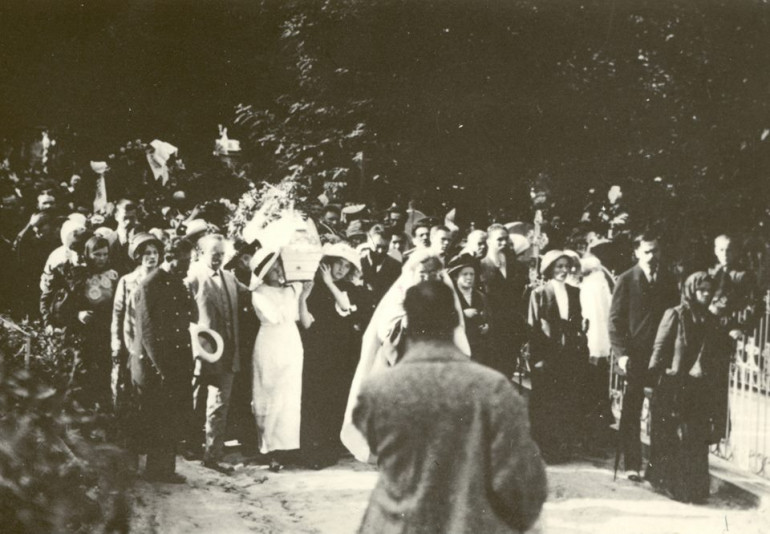

Лариса була другою із шести дітей Косачів. Батько і мати Лесі походили зі шляхти: Петро Косач – із заможного українсько-козацького шляхетства, яке мало власний герб і після ліквідації Гетьманщини отримало права російського дворянства, а Олена Пчілка – із роду Драгоманових, що належав до козацької старшини.
Навчання отримала переважно домашнє. Спочатку навчалася за програмою матері (Олена Пчілка взагалі принципово до 5-го класу вчила своїх дітей вдома, українською мовою, остерігаючись, щоб російська школа їх не зіпсувала), пізніше окремі вчителі приходили до неї додому, бо через туберкульоз кісток, який діагностували в десятилітньому віці, Леся тривалий час була прикутою до ліжка.
Попри це, Леся Українка досконало вивчила з десяток мов, серед яких
були французька (французькою володіла краще,
ніж російською),
німецька, англійська, італійська, польська, болгарська, а також
латина
і грецька.
В Єгипті почала вчити іспанську. Перекладала Байрона,
Шекспіра, Гоголя, Міцкевича, Гейне, Гюго, Гомера. У 19 років
написала
для сестер підручник «Стародавня історія східних народів».
Через хворобу (а точніше – через потребу постійного лікування) Леся Українка об’їздила всю Європу, довгий час жила в Італії та Єгипті, три роки прожила в Криму, в Ялті. Любила бувати в театрі та опері (відвідала майже всі найкращі європейські театри), прекрасно розбиралася в європейському мистецтві, скрізь записувалася до найкращих бібліотек, цікавилась новинками літератури та науковими працями. Критикувала «народництво» і всіляко просувала європейські тенденції в українську культуру, стала однією з провісників модернізму в українській літературі.
Друкувалася на сторінках започаткованого в 1887 році жіночого альманаху «Перший вінок», біля витоків якого стояли Наталя Кобринська та Олена Пчілка. Підтримувала емансипацію та жіночі рухи, які виступали за більші можливості для жіночої самореалізації.
У 1888 році разом з братом Михайлом стала співорганізатором літературного гуртка української молоді «Плеяда». Серед членів гуртка були Людмила Старицька, Володимир Самійленко, Іван Стешенко, Агатангел Кримський, Максим Славінський, Олександр Черняхівський та інші.
Леся не лише писала власні твори, але й активно займалася перекладами, адаптуючи європейську класику до українського читача. На той час українська література, яка була переважно сконцентрована на зображенні села, зіткнулася з проблемою нестачі слів для збільшення образності. Тому українська інтелігенція взялася за модернізацію української мови. Зокрема, Лесі Українці ми завдячуємо слів «промінь», «напровесні», Олена Пчілка ввела в лексикон українців слова «палкий», «мистецтво», «переможець», «нестяма», а Михайло Старицький подарував нам такі слова, як «мрія», «майбутнє», «байдужість», «завзяття», «темрява», «страдниця» та ін.
Все її життя було боротьбою: з хворобою, із суспільними догмами, за право бути українкою, мати власну думку, жити своїм розумом, не бути ні від кого залежною. Іван Франко назвав Лесю Українку «єдиним мужчиною в нашому письменстві».
Останні роки прожила в Єгипті та різних містах Грузії, куди переводили по службі її чоловіка, Климента Квітку. Померла 1 серпня 1913 року в грузинському селищі Сурамі – виснажені хворобою, у неї відмовили нирки. Похована у Києві на Байковому кладовищі біля батька та брата Михайла. До кладовища труну з тілом Лесі Українки несли шестеро жінок.
10 маловідомих фактів про Лесю Українку
-
Перші півроку життя Леся провела з батьком – у Ольги Косач після
народження доньки розвинулася анемія і вона поїхала лікуватися в
Європу. Петро Косач на цей час узяв відпустку і цілком
зосередився
на опіці над старшим сином Михайлом та Лесею, фактично,
врятувавши
її від смерті.

- У Лесі та Михайла був особливий духовний зв’язок. Їх в родині навіть називали спільним іменем Мишелосіє. Також Лесю часто називали Зея, Зеєчка – за назвою сорту кукурудзи «зея японіка» (тонка, як стеблина), бо вона була тоненька і тендітна, як стебло кукурудзи. В Колодяжному, де пройшло дитинство і юність поетки, вона товаришувала з сільськими дітьми, зустрічала череду, купалася в озері, потайки бігала до лісу, заступалася за селян, якщо худоба чинила шкоду.
-
З дитинства була допитливою. Читати навчилася в 4 роки, у 5
почала
писати драматичні твори, в шість – майстерно вишивала. У 9 років
написала перший вірш «Надія» під враженням під враженням від
засудження тітки Єлі (батькової сестри Олени Косач) на заслання
до
Сибіру за участь у замаху на шефа жандармів Дрентельна. У 12
років
переклала Гоголівські «Вечори на хуторі біля Диканьки».
- Псевдо «Українка» запозичила від рідного дядька, Михайла Драгоманова, який підписувався «Українець». Вперше так підписала свої вірші у тринадцять років у львівському часописі «Зоря», а в чотирнадцять опублікувала першу поему «Русалка».
-
Могла стати першою в Україні жінкою-композитором, мала абсолютний
слух і надзвичайний хист до музики. У 5 років почала грати на
роялі
і написала власну музичну п’єсу. Грати вчила спочатку батькова
сестра, Олександра Косач-Шимановська, потім – перша дружина
Миколи
Лисенка Ольга о’Коннор. Але хрест на кар’єрі поставила хвороба –
після чергового загострення у Лесі було видалено частину вражених
хворобою кісток і дівчинка кілька місяців провела в гіпсі.
- Також Леся прекрасно малювала, зокрема й морські пейзажі, деякий час брала уроки у Київській рисувальній школі Олександра Мурашка. Її називали першою жінкою-мариністкою в українському мистецтві. На жаль, збереглася лише одна картина Лесі Українки олійними фарбами.
- Родина Косачів належала до аристократії, але при цьому всіляко підкреслювала свою українськість. Усі змалечку розмовляли українською, діти носили народні строї. У Києві початку ХХ століття, коли після вбивства Олександра ІІ почався період реакції, таких родин лишилося тільки три на всю столицю: Лисенки, Старицькі і Косачі. До речі, у 1903 році в Полтаві на відкритті пам'ятника Котляревському, де зібралися видатні письменники та громадські діячі, мама Лесі Українки, Олена Пчілка проігнорувала заборону виступати українською і звернувся до присутніх рідною мовою.
- Леся Українка була надзвичайно працездатною. Свою «Лісову пісню» вона написала за 12 днів. А поему «Одержима» – за одну ніч, перебуваючи біля ліжка помираючого Сергія Мержинського. Загалом повне зібрання творів Лесі Українки становить 14 томів. Найперша ж збірка «На крилах пісень» побачила світ у березні 1893 року у Львові за сприяння Івана Франка – наклад книги тоді був лише 500 примірників.
- У ніч з 17 на 18 січня 1907 року на київській квартирі Косачів поліція провела обшук, вилучивши 121 брошуру соціалістичного змісту, що належали переважно братові поетеси. Лесю Українку та її сестру Ольгу заарештували і протримали у відділку ніч. З того часу Леся Українка опинилася під негласним наглядом поліції – навіть для поїздки в Колодяжне вона змушена була давати заяву поліції. Цензура не раз забороняла її твори – більшість своїх робіт поетеса публікувала за кордоном Російської імперії: на Галичині чи в Буковині, які тоді входили до Австро-Угорщини.
-
Чоловік Лесі Українки Климент Квітка був молодшим від неї на 9
років
і теж хворів туберкульозом. Довгий час Леся жила з ним «цивільним
шлюбом» – повінчалися вони тільки в 1907 році, під тиском родини.
В
останні роки підтримувала чоловіка, заробляючи на життя та
лікування
перекладами та приватними уроками.

- Климент Квітка пережив Лесю на 40 років, присвятивши життя збереженню її пам’яті. Вони зблизилися на ґрунті захоплення фольклором, разом бували у фольклорних експедиціях. Сама Леся Українка знала більше 500 народних пісень, і їхнє знайомство почалося з пропозиції записати ці пісні. Пізніше Лариса Косач-Квітка дала 300 рублів на організацію фольклорної експедиції Філарета Колеси, в ході якої були здійснені унікальні записи на воскові валики виступів кобзарів. На одному з таких валиків Климент Квітка записав голос Лесі Українки – цей валик зберігся до нашого часу.
- Пам’ятники Лесі Українці є в Києві, Луцьку, Ковелі, Новограді-Волинському, а також в Торонто, Клівленді, Батумі, Саскатуні, Телаві та багатьох інших містах світу. За значний внесок Лесі Українки в українську літературу, її ім’ям у 1970 році назвали астероїд — «2616 Леся»
Незалежна Україна !!!!